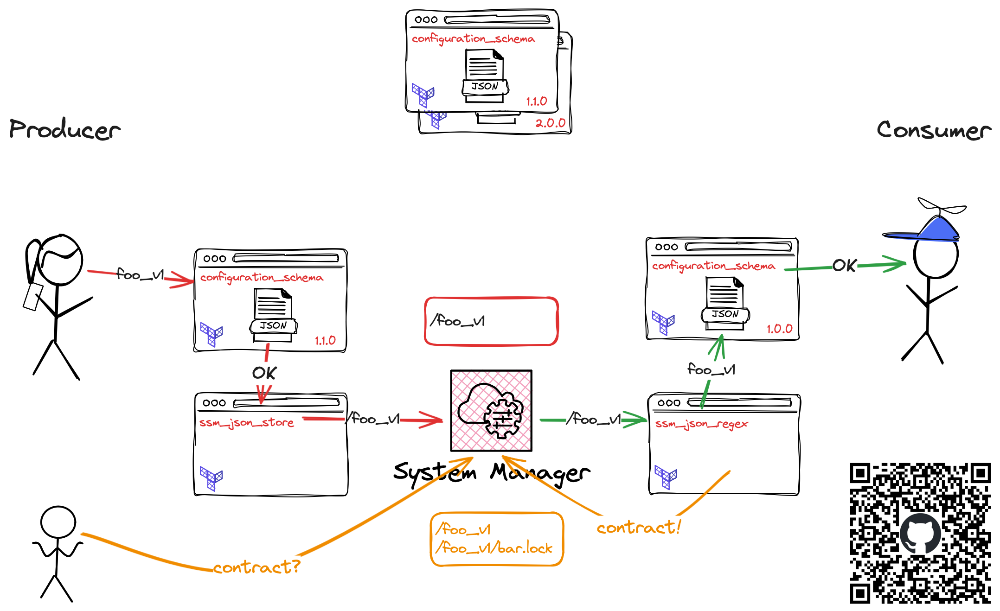
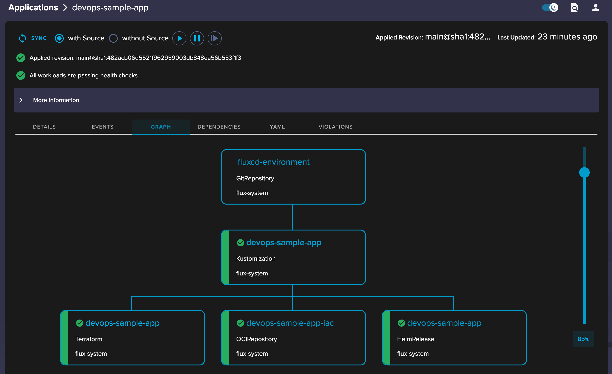
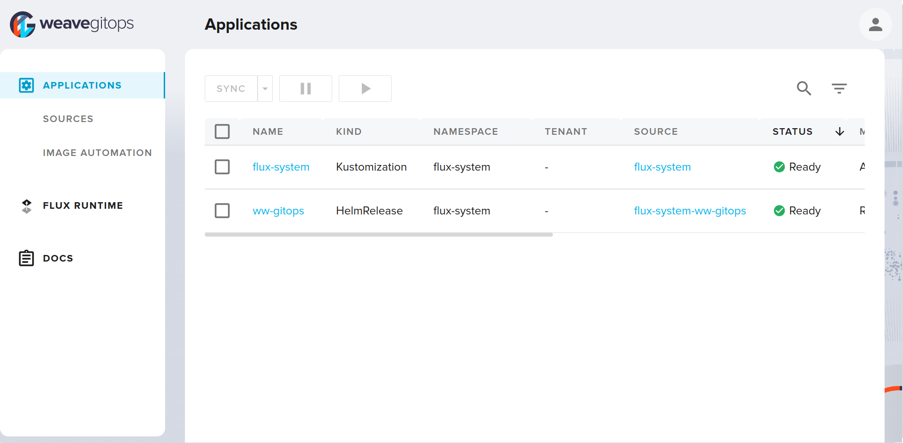

Lessons learned from running Terraform at reasonable scale
Daniel Ciaglia
Utilizing FluxCD, Weaveworks TF-Controller and boring-registry
Why easy, when we can make it complicated? – the unknown platform engineer
~~~~
Usage/Navigation
n,p- next, previous slideo- overviewf- fullscreenb- black out the presentations- speaker view- â¬…ï¸ ➡️ - navigate on the top-level
Daniel Ciaglia // Consultant
- Freelance
since 2022 - TIER Mobility SE
Director of Engineering - kreuzwerker GmbH
Principal Consultant - Bundesdruckerei GmbH
Senior Support Manager - [some more]
- SCUBA dive instructor
- AWS User Group Berlin
co-organiser

Today’s menu
- A typical Terraform stack evolution
- Running Terraform in GitOps
- Thoughts on the stack
- Architectural Decision Records summary
(1.1) Typical Terraform stack evolution1
Stack: Terraform root module2, tracked with 1 state file
Related: Highly recommend talk “Terraform: from zero to madness†by @Timur Bublik
(1.1.1) in the beginning
- you start your project
- put everything in 1 directory
- maybe split files by broader domains.
.
├── databases.tf
├── vpc.tf
├── main.tf
├── outputs.tf
└── terraform.tf(1.1.2) The staging/production split
- oh well, you need a staging environment
- both environments are very much the same
- you refactor the code to be parameterised by variables
- you provide 2
.tfvarsfiles
.
├── production.tfvars
├── staging.tfvars
├── databases.tf
├── vpc.tf
├── variables.tf
├── main.tf
└── terraform.tf(1.1.3) Code repetition - I need modules
- you add more services and they need infra
- the infra is similar
- you want to keep the code DRY3
- you create a repo, codify best practices, tag them for versioning
- you pull in modules via git
# select a specific tag
module "rds" {
source = "github.com/example/rds?ref=v1.2.0"
}(1.1.4) The great separation
- as the stack grows, the environments differ
- you start separating the code in larger blocks
- the base environment
- the services
- the code is pulled in as modules
- the
servicesmodule receives output ofbaseas input eg.vpc_idor subnets terraform apply planis run manually still
.
├── environments
│ ├── production
│ │ ├── main.tf
│ │ ├── outputs.tf
│ │ └── variables.tf
│ └── staging
│ ├── main.tf
│ ├── outputs.tf
│ └── variables.tf
└── modules
├── base
│ ├── main.tf
│ ├── outputs.tf
│ ├── variables.tf
│ └── vpc.tf
└── services
├── databases.tf
├── main.tf
├── outputs.tf
└── variables.tf(1.1.5) Fast forward
👉 At this point in time I joined the project 👈
The situation
- as the stack grows further, the amount of resources does as well
- each run of
terraform plan -out plantakes more and more time - to review and apply changes for developers becomes a dayfilling job
- you start cheating by targeted apply
- you notice that the amount of files downloaded for each
terraformstep is enormous4 - you notice that git tags can not be used for semantic versioning
(
version)
Possible solutions
- to address the versioning and data transfer issues - use a private Terraform module registry
- to address the runtime and ownership issue - split the stacks and let the teams handle them (DevOps style)
(1.2) The boring-registry
- TIER Mobility developed their own “boring†Terraform registry
without moving parts (hence the name)
- Details to be found here: https://github.com/boring-registry/boring-registry/
- The important feature for now is support for the Module Registry Protocol
- You provide a S3 bucket, module code and package it
in CD via
./boring-registry upload --type s3 (some more flags) ./your-module - You’ll get semantic versioning
module "rds" {
source = "registry.example.com/acme/rds/aws"
version = "~> 0.1"
}(1.3) Separating the service stacks
some Architectural Decisions
Don’t
- separate services along team borders5
➡️ teams and
responsibilities change, always
- share states between services ➡️ there are secrets in there!6 ➡️ read the docs of the
terraform_remote_statedata source!
Do
- Layer your stacks - account, network, clusters and services
- 1 Terraform stack per service
- good for least privilige access
- place the Terraform code into the service repo
- run the TF stacks in automation
- use an indirect way to share information between stacks7
(1.3.1) Indirect information exchange
- use structured data ➡️ ideally JSON for
jsondecode()andjsonencode() - use whatever storage you prefer ➡️ SSM Parameter Store or S3
Code for 3 Terraform modules will be provided
s3_json_storeCRUD JSON data on S3ssm_json_storeCRUD JSON data on SSM Parameter storessm_json_regexread SSM parameter with regex
(1.3.2) Write data (base system)
module "ssm_service_data" {
source = "registry.example.com/foo/ssm_json_store/aws"
version = "~> 1.0.2"
path = "/configuration"
name = "base"
data = {
domain = local.domain_name
environment = local.environment
environmentClass = local.environmentClass
backup_plan = local.backup_plan
networking = {
vpc_id = module.base.vpc_default_id
subnet_database_ids = module.base.subnet_private_database_ids
subnet_k8s_ids = module.base.subnet_private_k8s_ids
}
cluster = {
name = module.eks.cluster_name
oidc_issuer_url = module.eks.cluster_oidc_issuer_url
oidc_provider_arn = module.eks.cluster_oidc_provider_arn
}
}
}(1.3.3) Write data (upstream)
module "ssm_service_data" {
source = "registry.example.com/foo/ssm_json_store/aws"
version = "~> 1.0.2"
path = "/configuration"
name = "upstream"
data = {
installed = true
private = {}
public = {
sns = {
"foo" = {
"arn" = module.sns_foo.arn
"name" = module.sns_foo.name
}
sqs = {
"bar" = {
"arn" = module.bar_queue.arn
"name" = module.bar_queue.name
}
}
}
}
}
}(1.3.4) Read data (downstream)
module "ssm_data" {
source = "registry.example.com/foo/ssm_json_store/aws"
version = "~> 0.1.0"
path = "/configuration"
include_filter_regex = "(base|upstream)"
}
module "sns_sqs_subscription_foo" {
count = try(module.ssm_data.values["upstream"]["installed"], false) ? 1 : 0
source = "registry.example.com/foo/sns_sqs_subscription/aws"
version = "~> 0.1"
sns_arn = nonsensitive(module.ssm_data.values["upstream"]["public"]["sns"]["foo"]["arn"])
message_retention_seconds = 1209600
redrive_policy = jsonencode({
deadLetterTargetArn = module.dead_foo[0].arn
maxReceiveCount = 5
})
}(1.3.5) Downsides of strong decoupling
- Data contracts between stacks
- dependencies
- versioning
- Dependencies of stacks
- TF and Service code must be able to handle missing dependencies
- reconciliation of TF stacks to check changed upstreams
- eventually consistent
- Stack orchestration
- state management should be centralised
- stack execution should be in automation
- Permission management
- for code changes (eg.
CODEOWNERS) - for infrastructure changes
- for accessing resources
- for code changes (eg.
(1.3.6) Soft data contract between stacks
What’s “reasonable scale”, btw?
- we had 2 dimesions so far
- number of TF stacks for
x - number of environments for
y - and a fixed number of tenants (
1) forz
- number of TF stacks for
- let’s expand the setup to multiple tenants
- with this we’ll get a real
zdimension
- with this we’ll get a real
total stacks = stacks * environments * tenants
To give some numbers: my client LYNQTECH runs ~100 microservices in at least 2 environments per tenant for 5+ tenants - north of 1000 stacks 😉

(2) Terraform in GitOps
(2.1.1) FluxCD primer8
What is GitOps?
GitOps is an operational framework that takes DevOps best practices used for application development such as version control, collaboration, compliance, and CI/CD, and applies them to infrastructure automation. – https://about.gitlab.com/topics/gitops/
- In our context - pull vs. push principle
- You don’t care in which environment a stack runs in
- They are ready for your stack and your code is pulled in (vs. pushed via a pipeline)

(2.1.2) Weaveworks TF Controller910

(2.2.1) Structure of central FluxCD configuration
- Each environment must be configurable individually
- has its own entry point for FluxCD
- this allows for configuration of deployed services
- For audit reasons, production environments must use fixed service
versions, others can use semantic versioning
- Flux applications must be DRY
- do not c&p code
- implication: no individual configuration of apps
- in the central Flux repo there are NO variables,
parameters etc. pp.
- we only document the intent to run a service
- self-configuration happens inside of an environment
- Use of OCI-based registries for sources only
- everything as a final artefact
flux push artifact11 is your friend
FluxCD as an App of Apps system
.
├── environments
│ ├── client-a
│ │ ├── prod
│ │ │ ├── services
│ │ │ │ ├ _versions.yaml
│ │ │ │ ├ foo.yaml
│ │ │ │ └ bar.yaml
│ │ │ └── system
│ │ └── stage
│ │ ├── services
│ │ └── system
│ ├── client-b
│ [...]
│
├── flux-apps
│ ├── service-stacks
│ │ ├── foo
│ │ ├── bar
│ │ [...]
│ │ └── baz
│ └── system
│ [...]
│ ├── vertical-pod-autoscaler
│ └── weaveworks-gitopsfrom the perspective of an individual FluxCD installation
- cloud and runtime is set up
- provide data for stacks to become conscious
- load environment
- primary Flux app
- references all secondary service Flux apps
- includes the version tracking ConfigMap
- load service Flux apps
- contains relevant manifests
- eg. OCI Sources, Terraform, Kustomization
- apply individual service apps
Primary Flux app

Secondary Flux app
(2.3.1) Post build variable substitution12
- FluxCD’s unique possibility to replace variables in rendered manifests before apply
- in FluxCD repo
- environment specific
_versions.yamlbecomesservice-versionsConfigMap - satisfies the “fixed versions†requirement
- environment specific
- In underlying IaC - basic environment information for a TF stack are
written
baseConfigMap providesclient,environmentand other data- to form the path for Terraform state file
apiVersion: v1
kind: ConfigMap
metadata:
name: service-versions
data:
version_foo: "2.5.0"
version_foo_tf: "~ 0.1.0-0"
version_vertical_pod_autoscaler: "~> 9.0.0"
version_vertical_pod_autoscaler_tf: "~ 0.1.0"
---
apiVersion: v1
kind: ConfigMap
metadata:
name: init
data:
clientId: "tenant-a"
domain: "stage.tenant-a.tld"
environment: "stage"
environmentClass: "non-prod"
region: "eu-central-1"(2.3.2) usage example
apiVersion: source.toolkit.fluxcd.io/v1beta2
kind: OCIRepository
metadata:
name: foo-iac
spec:
interval: 5m
provider: aws
ref:
semver: "${version_foo_tf}"
url: oci://xxx.dkr.ecr.eu-central-1.amazonaws.com/iac/fooapiVersion: infra.contrib.fluxcd.io/v1alpha2
kind: Terraform
metadata:
name: foo
spec:
backendConfig:
customConfiguration: |
backend "s3" {
region = "${region}"
bucket = "terraform-states"
key = "${clientId}/${environment}/stacks/foo.tfstate"
role_arn = "arn:aws:iam::xxx:role/tf-${clientId}-${environment}"
dynamodb_table = "terraform-states-locks"
encrypt = true
}
sourceRef:
kind: OCIRepository
name: foo-iac
vars: [](2.4.1) Configuration Management
- (Terraform) code is agnostic of environments
- strict division of concerns between cloud and runtime environment
- Helm/Kustomize - Runtime (Kubernetes)
- Terraform - Cloud
- Each Cloud and Runtime environment
allow a stack to become concious
- Cloud: SSM data
base; Runtime: ConfigMapinit - 👉 pull of configiguration vs. push
- Cloud: SSM data
- per code stack - data are baked into artifact
- terraform - single
configuration.tf - kustomize - separate
overlaydirectories - helm - separate
values.yaml
- terraform - single
(2.4.2) Example
locals {
service = "foo"
squad = "bar"
domain_name = module.ssm_data.values["base"]["domain"]
cluster_name = module.ssm_data.values["base"]["cluster"]["name"]
client = nonsensitive(module.ssm_data.values["base"]["clientId"])
environment = nonsensitive(module.ssm_data.values["base"]["environment"])
env_class = nonsensitive(module.ssm_data.values["base"]["environment_class"])
configuration = {
default = {
k8s_namespace = local.service
k8s_sa_name = local.service
rds_instance_class = "db.t4g.medium"
}
client_a = {
stage = {}
}
environment_classes = {
non-prod = {}
prod = {
rds_instance_class = "db.r6g.medium"
}
}
}
# choose the right configuration based on
# client/environment/environment class or simply defaults
selected_configuration = merge(
local.configuration["default"],
try(local.configuration[local.client][local.environment], {})
)
}# get the central SSM config parameters
module "ssm_data" {
source = "registry.example.com/foo/ssm_full_json_store/aws"
version = "0.3.1"
path = var.config_map_base_path
include_filter_regex = "(base|foo|bar)"
}
module "database" {
source = "registry.example.com/foo/RDS/aws"
version = "3.5.0"
identifier = local.service
squad = local.squad
rds_engine_version = local.selected_configuration["rds_engine_version"]
rds_instance_class = local.selected_configuration["rds_instance_class"]
client_id = local.client
environment = local.environment
vpc_id = module.ssm_data.values["base"]["aws"]["vpc_id"]
subnet_ids = module.ssm_data.values["base"]["aws"]["subnet_public_ids"]
# [...]
}(2.4.3) Connecting Cloud and Runtime
- remember: division of concerns - cloud and runtime
- Terraform stack writes structured data as JSON
- Runtime pulls in data via External Secrets Operator13
- Reloader watches and upgrades Pods with their associated data
module "ssm_service_data" {
source = "registry.example.com/foo/ssm_json_store/aws"
version = "1.0.2"
path = "/configuration"
name = "foo"
data = {
installed = true
private = {
database = {
database_name = module.database.databas
database_username = module.database.database_username
endpoint = module.database.endpoint
reader_endpoint = module.database.reader_endpoint
port = module.database.cluster_port
}
}
public = {}
}
}apiVersion: external-secrets.io/v1beta1
kind: ExternalSecret
metadata:
name: foo-secrets-ssm
spec:
target:
name: foo-secrets-ssm
data:
# [...]
- remoteRef:
key: /configuration/foo
property: private.database.database_username
secretKey: DATABASE_USER
- remoteRef:
key: /configuration/foo
property: private.database.endpoint
secretKey: DATABASE_HOST
---
kind: Deployment
metadata:
annotations:
reloader.stakater.com/auto: "true"(2.5) Specifics of TF-Controller
(2.5.1) Traffic
- each stack has its own
tf-runnerpod- Decision: no persistent pods between runs for security reasons (permissions of SA)
- Sizing example:
terraform-provider-aws_5.31.0_darwin_arm64.zip= 84MB - NAT costs (AWS specific issue; GCP lowered egress costs to $0
recently)
- reconcile every 30’
terraform initfor each execution- 100 stacks * 48 runs/day * ~100MB providers * $0,052/GB = 480GB/$24,96 day/environment
- boring-registry to the rescue 🎉
- caching, pull-through proxy
- Provider Network Mirror Protocol
- provider stored and delivered as S3 objects
- 😉 use S3 VPC endpoints
.terraformrc
credentials "my.terraform-registry.foo.bar" {
token = "7H151553CUr3!" # we are 1337
}
provider_installation {
network_mirror {
url = "https://my.terraform-registry.foo.bar/v1/mirror/"
include = ["*/*"]
}
}(2.5.2) Kubernetes resources
- each reconcile cycle triggers one
tf-runnerpod per stack - each
tf-runnerpods consumes- ~800m CPU
- ~150M Memory
- This would spawn a lot of machines at times
- using k8s limits based on
priorityClass
apiVersion: scheduling.k8s.io/v1
description: used to limit the number of terraform runners
kind: PriorityClass
metadata:
name: terraform
value: 0 # same priority as everybody else
---
apiVersion: v1
kind: ResourceQuota
metadata:
name: terraform-runners
spec:
hard:
pods: "10"
scopeSelector:
matchExpressions:
- operator: In
scopeName: PriorityClass
values:
- terraform(2.6) Weave Policy Engine14
- based on Rego and similar to Open Policy Agent
- Goal: auto approve Terraform changes
- Decision: no destroy/recreate
- Decision: no direct IAM resources (only via controlled modules)
- âš ï¸ not an easy task - talk of its own
(2.7) Weave GitOps UI15
aka - the missing FluxCD UI

(3.0) Is it production ready?
Be honest, where are you in the project?
- In the middle of cutting the large TF stacks
- 👉 very useful tool: minamijoyo/tfmigrate
- Automatic approvals are yet to come
- Branch Planner needs to be implemented to enable full developer ownership
- after IaC migration, services move to FluxCD as well
(3.1) Why not the BACK stack18?
- Backstage (B): A self-service portal to empower developers
- Argo CD (A): A GitOps-based continuous delivery (CD) tool for streamlined software delivery.
- Crossplane (C): A universal control plane simplifying self-service infrastructure provisioning through abstractions.
- Kyverno (K): A Policy as Code (PaC) tool
- existent Terraform stack and knowledge did not justify re-write of IaC
- Crossplane is bound to 1 kubernetes cluster (state in etcd) where Terraform is bound to a state file
- Introduction of Backstage was out of scope
- ArgoCD vs. FluxCD
- ArgoCD’s handling of Helm charts (templated and applied)
- TF-Controller as part of FluxCD eco-system
- ArgoCD has UI and concept of multi-cluster baked in
- Kyverno “runs as a dynamic admission controller†can not be used as a decision engine
(3.2) Downsides
- development and local testing of TF code is hard
- possibly via Branch Planner
- only for Github sources
- Terraform module registry - so batteries included for developers?
yes, kind of, but
- Terraform understanding needed
- it is hard to grock the stack data exchange concept
- we provide template repositories, use case documentation
- TF-Controller: (un)interruptable pods needed (for writing states)
- missing UI (for TF-Controller) and Monitoring APIs
- implicit data contracts between Terraform stacks
(3.2.1) - An uncertain future

https://www.linkedin.com/feed/update/urn:li:activity:7160295096825860096/
(3.3) Upsides
- all domains (code, kubernetes and cloud environment) follow the same
pattern
- same CI and CD
- same artefact type (OCI)
- similar release cycles
- single entry point for Product Owners
- IaC runner can be replaced
- TF-Controller is just a controlled terraform executor
- migration to eg. Spacelift.io or others possible
- break-the-glas scenario supported (manual stack execution)
- Terraform/OpenTofu eco-system can be reused
- providers
- knowledge and modules
(3.4) Thanksides
- LYNQTECH GmbH for granting
permission to share information and code
- 😉 LYNQTECH is hiring https://www.lynq.tech/jobs/
- All colleagues who were and are part of this journey
- The FluxCD Community and WeaveWorks for their software
(4.0) Architectural decisions
General FluxCD
- Each tenant environment must be configurable individually
- For audit reasons, production envs must use fixed service versions
- Applications, in the central repo, must be DRY. No inidividual stacks.
- Use of OCI-based registries for sources only (exception: external Helm)
- Code is agnostic of environments and is not parameterised
- Each cloud (AWS) and runtime (Kubernetes) environment allows a stack to become concious
- kustomize style data baked into artifact
- Secrets synchronised via External-Secret Operator
- Kubernetes cluster should be treated as cattle
TF-Controller
- No vendor lock-in; re-usability of eco-system strong plus
- Terraform providers
- Terraform OSS modules
- No persistent pods between runs
- Aim for Auto approval for Terraform changes
- no destroy/recreate
- no direct IAM resources (only via controlled modules)
- only approved top-level module sources
Sources + Links
- FluxCD documentation - https://fluxcd.io/flux/components/
- Weave GitOps // Terraform Controller documentation - https://weaveworks.github.io/tf-controller/
- Weave GitOps // The Policy Ecosystem - https://docs.gitops.weave.works/docs/policy/getting-started/
your experience might be different 😄↩ï¸
https://developer.hashicorp.com/terraform/language/files#the-root-module↩︎
https://en.wikipedia.org/wiki/Don%27t_repeat_yourself↩︎
HashiTalks DACH 2020 - Opinionated terraform modules and a registry↩︎
How TIER switched paradigms - from team- to service-centric↩︎
TF-CIX as an approach to share information between terraform stacks↩︎
https://fluxcd.io/flux/components/↩︎
https://github.com/weaveworks/tf-controller↩︎
Please note: As the tf-runner ServiceAccount is usually very powerful, do not run it in an accessible namespace!↩︎
https://fluxcd.io/flux/cmd/flux_push_artifact/↩︎
https://fluxcd.io/flux/components/kustomize/kustomizations/#post-build-variable-substitution/↩︎
Weave Policy Engine, Integrate TF Controller with Flux Receivers and Alerts, Open Policy Agent↩︎
https://github.com/weaveworks/weave-gitops and https://docs.gitops.weave.works/↩︎
https://www.opentofu.org/↩︎
https://github.com/weaveworks/tf-controller/releases/tag/v0.16.0-rc.3↩︎
Introducing the BACK Stack! - https://www.youtube.com/watch?v=SMlR12uwMLs↩︎